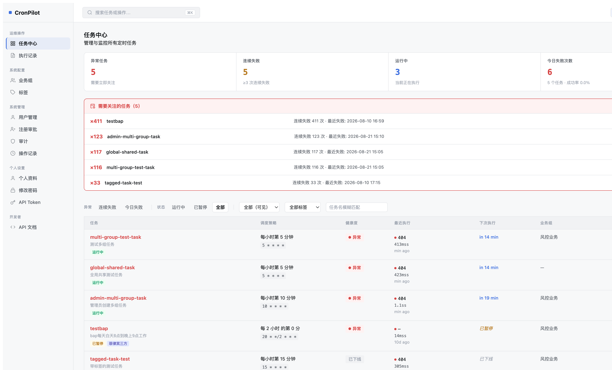
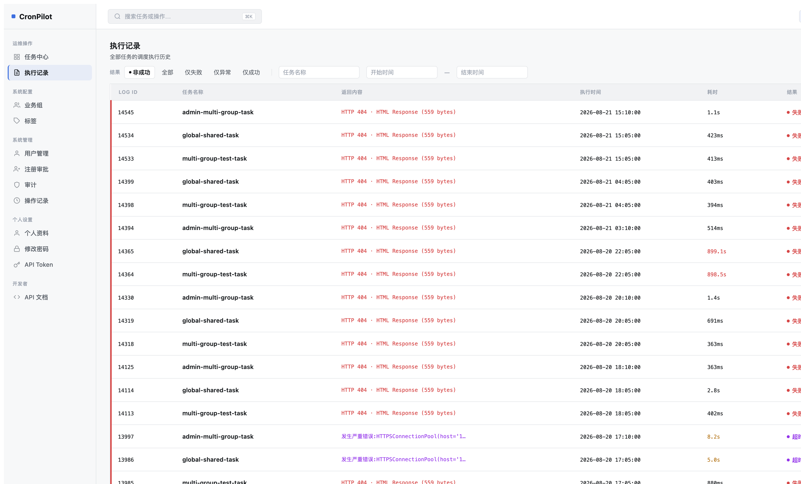
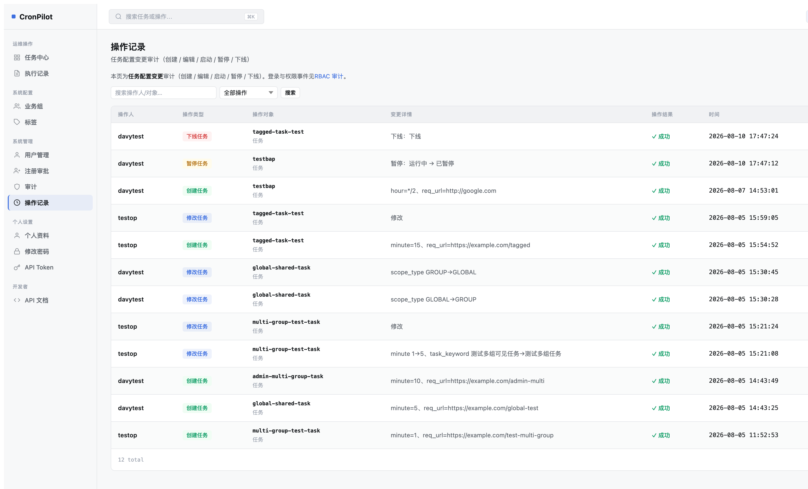
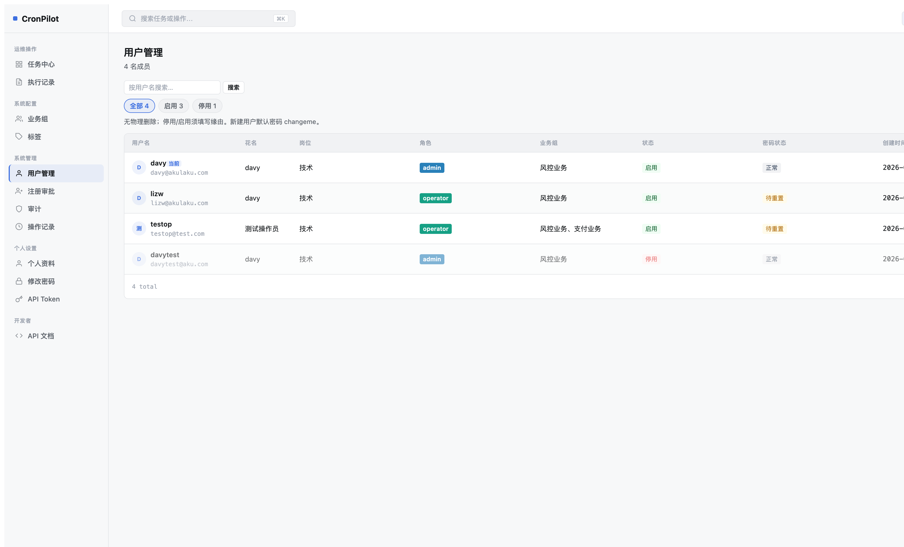
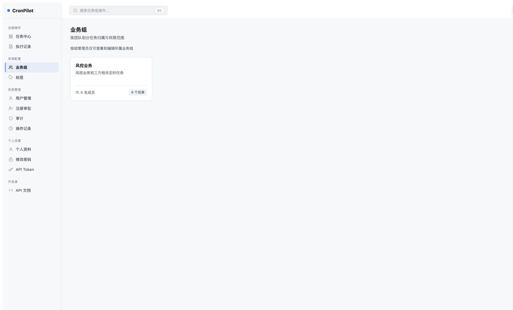
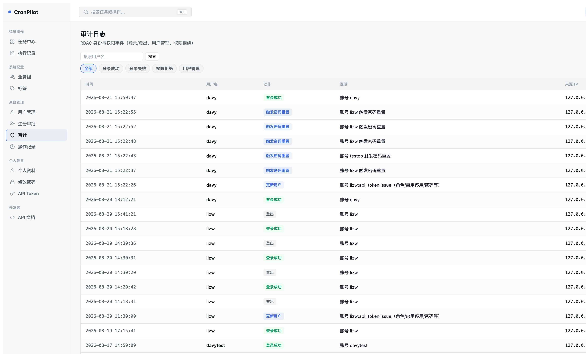
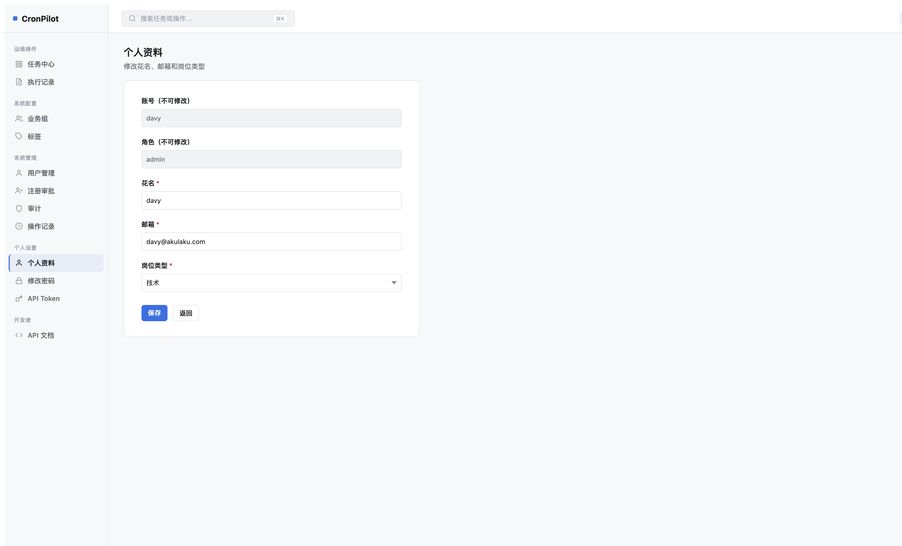
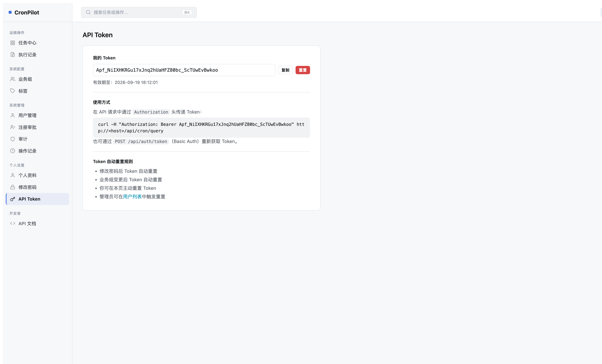

CronPilot 第10轮 Mockup 对比评估
对照参考文件：/Users/summer/Downloads/CronPilot-2026-full-mockup.html（外部全页面提案）· 评估时间：2026-08-21 · 运行环境：http://127.0.0.1:5001 v2 UI
评估方法：逐页浏览器截图（账号 admin / davy）与 Mockup 源码 view-* 区块对照。
已知已完成项（内部迭代）： Z1 操作记录 7 列 · Z2 审计 6 列+chip · A2 用户 chip+邮箱副标题 · Z3 标签 inline 删除 · B1 停用用户只读页 — 以下标注 ✓ Done 表示相对内部目标已交付；相对 Downloads Mockup 仍可能有偏差。
路由说明：个人资料实际路由 /rbac/profile（非 /rbac/edit-profile）；API Token 为 /rbac/api_token（非 /rbac/api-token）。
高 — 列结构/核心 IA 与 Mockup 不一致
Downloads Mockup（view-dashboard）
- Stats 4 项：任务总数 / 运行中 / 今日失败 / 24h 成功率
- 筛选：搜索 + chip（全部/运行中/异常/已下线）
- 表格 4 列：任务 / 调度策略 / 运行状态 / 操作
- 运行状态：pin + 文案（运行中/上次成功/执行失败/已下线）
- 操作：icon-only 编辑 + 暂停
- 页头右上角「新建任务」primary 按钮
- 无 Exception Panel、健康度、最近/下次执行列
当前实现
- Stats：异常任务 / 连续失败 / 运行中 / 今日失败次数（Health-First IA）
- Exception Panel「需要关注的任务 (N)」
- 表格 7 列：任务 / 调度策略 / 健康度 / 最近执行 / 下次执行 / 业务组 / 操作
- 筛选：多维度按钮组 + Scope/标签下拉 + 任务名输入
- 操作：立即执行 + 执行记录 + 更多（非纯 icon 双按钮）
- 「新建任务」在筛选栏右侧（davy 可见）
<div class="stats">
任务总数 · 运行中 · 今日失败 · 24h 成功率
<table><th>任务<th>调度策略<th>运行状态<th>操作
<span class="status running"><span class="pin"></span>运行中</span>

D1-01 [高]表格列结构与 Mockup 根本不同：实现 7 列 Health-First vs Mockup 4 列简化视图
Mockup: 4列（任务/调度/运行状态/操作）实现: 7列 + 健康度/最近/下次/业务组
修复：新增 Mockup 对齐模式或重构 dashboard 为 4 列；运行状态合并健康度+最近执行为单列 .status pin 组件；移除或折叠 Exception Panel 为可选区块。
D1-02 [高]Stats 指标名称与语义不匹配
任务总数/运行中/今日失败/24h成功率异常任务/连续失败/运行中/今日失败次数
修复：后端聚合接口返回 Mockup 四指标；Stats 组件改用 .stat .value.signal|danger|success 色类。
D1-03 [高]Mockup 无 Exception Panel，实现有独立告警面板占垂直空间
修复：按 Mockup 移除或改为 Stats 卡片点击后的抽屉/Modal；保留数据但默认隐藏。
D1-04 [中]筛选器 UX 不同：Mockup 为 .chip 四态；实现为按钮组 + 下拉
修复：替换 .console-filters 为 Mockup .filters .chip 结构；chip 文案对齐：全部/运行中/异常/已下线。
D1-05 [中]操作列按钮类型不符：Mockup icon-only 编辑+暂停；实现为文字/混合按钮+更多菜单
修复：操作列改用 .row-actions .icon-btn 仅两枚 SVG 按钮。
D1-06 [低]「新建任务」位置：Mockup 在 page-head 右侧 primary；实现在筛选栏
修复：移至 .page-head 内 .btn.btn-primary，与 Mockup 336–333 行一致。
Downloads Mockup（view-logs）
- 筛选：搜索 + chip（全部/失败/超时）
- 表格 5 列：任务 / 触发时间 / 耗时 / 响应码 / 状态
- 状态：
.status.success|failed pin 组件
- 无 LOG ID、返回内容、详情链接列
当前实现
- 筛选：结果按钮组（非成功/全部/仅失败/仅异常/仅成功）+ 任务名 + 日期范围
- 列：LOG ID / 任务名称 / 返回内容 / 执行时间 / 耗时 / 结果 / 操作
- 失败行左边框高亮（非 Mockup 行背景 hover）
- 默认筛选「非成功」
<thead>任务 · 触发时间 · 耗时 · 响应码 · 状态
<div class="chip active">全部</div> 失败 · 超时

D3-01 [高]列结构不匹配：7 列含 LOG ID/返回内容/操作 vs Mockup 5 列精简视图
修复：Mockup 模式下隐藏 LOG ID 与返回内容（或移入详情页）；保留任务/时间/耗时/响应码/状态五列。
D3-02 [中]筛选 chip 文案与数量：Mockup 全部/失败/超时；实现 5 态按钮组 + 日期
修复：简化为三 chip；日期筛选收进「高级筛选」折叠。
D3-03 [中]响应码未独立成列（合并在返回内容/结果中）
修复：解析 HTTP status 单独列 .task-meta 展示，对齐 Mockup 443–447 行。
D3-04 [低]默认筛选「非成功」vs Mockup 默认「全部」
修复：列表默认 chip active 为全部；记住用户上次筛选偏好。
✓ Z1 Done（内部）：模板已含 7 列（操作人/操作类型/操作对象/变更详情/操作结果/时间/来源 IP）。相对 Downloads Mockup 仍有结构差异。
Downloads Mockup（view-optlog）
- 无筛选栏，纯表格
- 5 列：操作人 / 操作(badge) / 对象 / 时间 / 来源 IP
- 操作 badge：修改/下线/新建
当前实现
- 7 列（含变更详情、操作结果、来源 IP）
- 有搜索 + 操作类型下拉筛选
- 操作类型彩色 badge ✓
- 页头副标题 + RBAC 审计交叉链接
<thead>操作人 · 操作 · 对象 · 时间 · 来源 IP
<span class="badge badge-signal">修改</span>

D4-01 [中]列数与 Mockup 不同：实现 7 列 vs Mockup 5 列；Mockup 无「变更详情」「操作结果」独立列
修复：Mockup 模式下合并变更详情入「对象」列 subtitle；结果列改为行内 badge 或移除（Mockup 隐含成功）。
D4-02 [中]Mockup 无工具栏筛选；实现有 keyword + action 下拉
修复：可选：默认隐藏筛选栏，仅保留 Mockup 纯表格；或改为 Mockup 风格 search chip。
D4-03 [低]列名「操作类型」vs Mockup「操作」；时间列 Mockup 无单独「操作结果」
修复：表头文案对齐 Mockup；badge 样式已接近。
✓ A2 Done：chip 筛选（全部/启用/停用 + 计数）、用户名+邮箱副标题、列对齐已改善。✓ B1 Done：停用用户只读视图。
Downloads Mockup（view-users）
- 5 列：用户(avatar+名+邮箱) / 角色 / 状态 / 最近登录 / 操作(icon)
- 页头：「邀请成员」primary 按钮
- 副标题：「4 名成员」
- 无花名/岗位/业务组/密码状态/创建时间列
当前实现
- 9 列含花名/岗位/角色/业务组/状态/密码状态/创建时间/操作
- 「+ 添加用户」vs Mockup「邀请成员」
- chip 筛选 + 搜索 ✓
- avatar + 邮箱副标题 ✓
<thead>用户 · 角色 · 状态 · 最近登录 · 操作
<button class="btn btn-primary">邀请成员</button>
<span class="badge badge-signal">管理员</span>

D5-01 [高]表格列结构与 Mockup 差异大：实现 9 列 enterprise 视图 vs Mockup 5 列精简视图
修复：提供 Mockup 列预设：用户/角色/状态/最近登录/操作；花名/岗位等移入编辑抽屉。
D5-02 [高]缺少「最近登录」列；Mockup 展示相对时间（2 分钟前）
修复：从 audit/login 聚合 last_login_at；列渲染人类可读相对时间。
D5-03 [中]主按钮「+ 添加用户」vs Mockup「邀请成员」；角色 badge 文案（管理员/运维/观察者 vs admin/operator）
修复：按钮文案与 icon 对齐 Mockup；角色 badge 映射中文标签。
D5-04 [低]操作列：Mockup 单 icon 编辑；实现为链接列（截图中较窄）
修复：操作列改为 .icon-btn 单按钮。
Downloads Mockup（view-groups）
.card-grid 多卡布局- 卡脚：
.avatars 头像叠堆 + 「N 个任务」badge
- 页头「新建业务组」primary 按钮
当前实现
- card-grid ✓ 基本结构对齐
- 卡脚：👥 图标 + 「4 名成员」+ 任务数 badge
- 无头像叠堆
.avatars
- biz admin 视图无「新建业务组」按钮（scope 限制）
<div class="gfoot">
<div class="avatars">张 · 李 · +3</div>
<span class="badge badge-muted">18 个任务</span>

D6-01 [中]卡脚成员展示：Mockup 头像叠堆 vs 实现 👥 + 文字计数
修复：.grp-foot 改用 .avatars .avatar 叠堆（最多 3 + +N）。
D6-02 [中]Seed Admin 缺「新建业务组」入口（需在 admin 账号验证；Mockup 始终显示）
修复：对有 user:manage 权限用户在 page-head 显示 Mockup primary 按钮。
D6-03 [低]副标题文案略异：Mockup「按团队划分…」vs 实现含权限说明第二行
修复：统一为 Mockup 单行 sub；权限说明移 tooltip。
✓ Z2 Done（内部）：6 列含结果列 + chip 筛选器（全部/登录成功/登录失败/权限拒绝/用户管理）。
Downloads Mockup（view-audit）
- chip：全部 / 登录失败 / 权限变更
- 5 列：事件 / 用户 / 时间 / IP / 结果(badge)
- 结果列独立：
badge-success / badge-danger
当前实现
- 6 列：时间 / 用户名 / 动作 / 说明 / 来源 IP / 结果
- 5 chip（比 Mockup 多「登录成功」「用户管理」）
- 动作与结果部分合并在「动作」badge 中
<thead>事件 · 用户 · 时间 · IP · 结果
<div class="chip">登录失败</div> 权限变更

D7-01 [中]列顺序与命名：Mockup「事件/用户/时间/IP/结果」vs 实现「时间/用户名/动作/说明/IP/结果」
修复：重排列顺序；「动作+说明」合并为 Mockup「事件」单列。
D7-02 [中]筛选 chip 集合不同：Mockup 3 项 vs 实现 5 项
修复：Mockup 模式下展示 全部/登录失败/权限变更；其余收进「更多」。
D7-03 [低]失败计数 badge「失败 × 5」样式 Mockup 有，实现仅「登录失败」文字
修复：连续失败聚合显示 badge-danger 计数。
Downloads Mockup
- 无独立 profile 视图；用户信息在用户 dropdown（ud-head）
- dropdown 项：修改密码 / API Token / 退出
当前实现
- 独立表单页：账号/角色只读 + 花名/邮箱/岗位可编辑
- sidebar「个人资料」导航项
.form-card 风格接近 Mockup 表单规范

D9-01 [低]Mockup 无此页 — 为实现扩展；与 Mockup 用户 dropdown 信息架构不同
修复：可选：顶栏增加 Mockup .user-chip 下拉，profile 页作为深链接保留。
D9-02 [低]顶栏缺少 Mockup 用户头像 chip（当前仅 sidebar 导航）
修复：在 _topbar.html 实现 user-menu dropdown 对齐 Mockup 301–324 行。
Downloads Mockup
- user dropdown 菜单项「API Token」
- 独立 API 文档页（view-apidoc）为 doc-card 列表，非 Token 管理
当前实现
- 独立 Token 管理页：只读 Token + 复制/重置
- 使用说明 code block + 自动重置规则列表
- 功能完整，视觉接近 form-card 风格

D10-01 [低]Mockup 仅在 dropdown 提及，无页面规格 — 当前页为实现扩展
修复：确保 dropdown 与 sidebar 双入口一致；样式沿用 Mockup .code-block。
D10-02 [低]Shell 层：Mockup 顶栏含 theme-toggle + 通知 + user-chip；实现顶栏较简
修复：顶栏补齐 Mockup 288–299 行组件（theme-toggle/通知/user-menu）。
S-01 [中]Sidebar 项数与分组：Mockup 10 项（含任务编辑 nav）vs 实现 12+ 项（含注册审批/个人资料等）
修复：对齐 Mockup nav-section 三分法；扩展项收进二级或 user dropdown。
S-02 [中]Topbar 缺少 Mockup user-chip 下拉菜单（含修改密码/API Token/退出）
修复：实现 _topbar.html user-menu 组件，对齐 Mockup 301–324 行。
S-03 [低]Mockup 搜索框 placeholder「搜索任务、用户、日志…」vs 实现「搜索任务或操作…」
修复：统一 placeholder 与 ⌘K 快捷键行为。
总结：相对 Downloads Mockup 的主要剩余工作
- 任务中心（最高优先级）：从 Health-First 7 列 + Exception Panel 回归 Mockup 4 列简化视图，或提供可切换布局；Stats 四指标对齐。
- 执行记录 + 任务表单：列/字段精简至 Mockup 规格；表单增加 switch-row 与 form-card 布局。
- 用户管理：列从 9 列 enterprise 视图收敛为 Mockup 5 列；补「最近登录」。
- Shell 顶栏：补齐 user-chip dropdown、theme-toggle，统一全局导航 IA。
- 中低优先级：业务组头像叠堆、标签页去表格、审计列重排、操作记录 Mockup 简化模式。
估算总工作量：约 12–16 人日（含后端聚合接口 + 前端模板/CSS + 回归测试）。
截图路径：doc/design/screenshots/eval10/